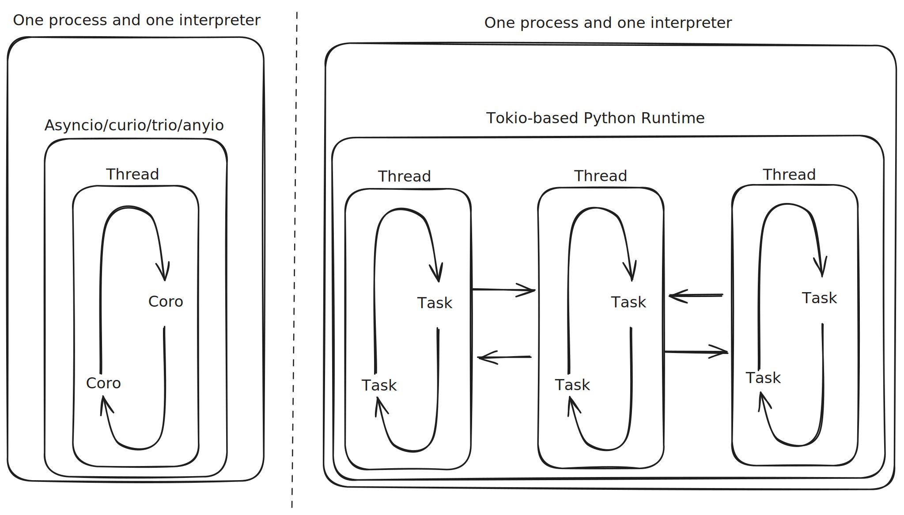

🦀 Rüstzeit
Asynchronous and Concurrent Optimisation in Python and Rust
Jamie Coombes
PyCon DE & PyData 2025
PyCon: Rust
23. - 25. April 2025
Darmstadtium, Darmstadt, Deutschland
- Main Talk Question
Python/Rust Interop and David Hewitt's free-threaded python atop Tokio question.
- Asynchronous Concurrency
Exploring async foundations through Rayon and Tokio in Rust, compared with Python's approaches.
- Case Study: A million monkeys at a million typewriters
Parallelising and benchmarking a genetic algorithm for evolving text into Shakespeare quotes.
- Conclusion
Exploring the future of Python/Rust Interop and the potential for free-threaded Python atop Tokio.
Test Mermaid Diagram
↓ Press down for more examples
Example Image
Example performance flame graph visualization
Example Complex Diagram
Python-Rust interop architecture diagram
Python/Rust Interop Growth in 2025

- Rust language as preferred developer-experience for writing native python extensions.
- RIIR - Rewrite It In Rust - for 10x-80x* performance improvements
- PyO3 is the most popular Rust library for Python interop.
- Maturin is the most popular tool for building and distributing Rust Python packages. *performance benchmarking is hard, see flame graphs later
Rust/Python Interop Growth in 2025
The Main Talk Questions
"Do we want to expose the tokio event loop as the basis for a Python async runtime?"
— David Hewitt @davidhewittdev - Rust Nation UK 2025
"How will free-threaded Python lead to better parallel code?"
- me, today, right now
Free-threaded Python + Tokio = ??
Free Threading in Python
Python 3.13 shipped an
- Expected to become the default in a few years
- PyO3 supports 3.13t fully
- Rust's Send + Sync traits make it straightforward to reason about threading issues
A multi-threaded tokio-based Python runtime could be...
Memory Efficient (and hence scalable)

Image source: Pkolaczk's memory-consumption-of-async
...well past os.cpu_count() threads

Image source: Pkolaczk's memory-consumption-of-async
Typed to prevent data races
- Rust's ownership model guarantees thread safety at compile time
- Rich ecosystem of threading primitives (std::sync, parking_lot, crossbeam)
- Threading can complement or replace async patterns
Note: While Rust prevents data races, it can't prevent all concurrency bugs (deadlocks, algorithmic issues)
Faster
so you add :rocket: to your project README
okay, but I really like python
what are the multi-threaded async alternatives?
well there is threado...
but threado is deado

maybe ask @dabeaz to bring it back for 3.14t or 3.15t?
or just do dabeaz's summer of rust and create a tokio-based python runtime?
How do rust and python think about concurrency and parallelism?
Section 2: Foundations of Async Programming
The evolution of concurrency models in Python and Rust
Python's Async Evolution
pre-generators] --> B[Twisted
with generators] B --> C[asyncio] C --> D[Trio] D --> E[anyio]
A journey from explicit to implicit concurrency control
↓ Press down for examples
Twisted (pre-generators)
from twisted.internet import reactor, defer
def get_data():
d = defer.Deferred()
# Simulate async operation
reactor.callLater(1, lambda: d.callback("Result"))
return d
def handle_result(result):
print(f"Got: {result}")
reactor.stop()
def handle_error(failure):
print(f"Error: {failure}")
reactor.stop()
d = get_data()
d.addCallbacks(handle_result, handle_error)
reactor.run()Explicit callback-based approach using Deferreds
Twisted with generators (inlineCallbacks)
from twisted.internet import reactor, defer
from twisted.internet.defer import inlineCallbacks
@inlineCallbacks
def async_operation():
try:
result1 = yield get_data()
result2 = yield get_more_data(result1)
print(f"Final result: {result2}")
except Exception as e:
print(f"Error: {e}")
finally:
reactor.stop()
reactor.callWhenRunning(async_operation)
reactor.run()Semi-implicit coroutines using yield
asyncio (Python 3.5+)
import asyncio
async def get_data():
await asyncio.sleep(1) # Simulate async operation
return "Result"
async def main():
try:
result1 = await get_data()
result2 = await process_data(result1)
print(f"Final result: {result2}")
except Exception as e:
print(f"Error: {e}")
asyncio.run(main())Fully implicit coroutines with async/await syntax
Trio (Structured Concurrency)
import trio
async def connect(addr):
# ... connection attempt logic
return socket
async def main():
async with trio.open_nursery() as nursery:
for addr in addresses:
nursery.start_soon(connect, addr)
# We only get here when ALL tasks are done
print("All connections complete")Structured concurrency with explicit task relationships
anyio: Unifying asyncio and Trio
import anyio
async def main():
async with anyio.create_task_group() as tg:
for addr in addresses:
tg.start_soon(connect_to, addr)
# Works on both asyncio and trio backends
# Run with asyncio backend
anyio.run(main, backend="asyncio")
# Or with trio backend
anyio.run(main, backend="trio")2.4M monthly downloads, powers httpx, FastAPI, Pydantic AI
Memory Safety vs Liveness
Memory Safety
- Prevents undefined behavior from invalid memory access
- Avoids segmentation faults, buffer overflows, use-after-free
- Focus of Rust's borrow checker
Liveness
- Ensures program makes progress
- Prevents deadlocks, livelocks, infinite loops
- Focus of structured concurrency
Languages typically prioritize one over the other
How Memory Safety is Achieved
| Python | Rust |
|---|---|
| Automatic memory management via garbage collection | Compile-time ownership and lifetime checking |
| Object reference counting + cycle detection | No garbage collector for most code |
| Runtime checks (IndexError, KeyError, etc.) | Static analysis prevents most errors at compile time |
| No direct pointer manipulation in pure Python | Safe abstractions around pointers (references, Box, etc.) |
| C extensions can introduce memory safety issues | Unsafe blocks explicitly mark potential issues |
Structured Concurrency: Solving Liveness
Trio's Model

"All tasks are equal"
Key Principles
- Tasks tied to lexical scopes
- Automatic cancellation on scope exit
- Error propagation to parent
- Child tasks cannot outlive parent scope
↓ Press down for liveness guarantee examples
The Infinite Loop Problem
Problem in Tokio
// This will never complete if the socket
// continues to receive data
let results = tokio::join!(
infinite_socket_reader(&mut socket),
some_other_task()
);
// This line is never reachedSolution in Trio
async with trio.move_on_after(30):
async with trio.open_nursery() as nursery:
nursery.start_soon(infinite_socket_reader)
nursery.start_soon(some_other_task)
# Control reaches here after at most 30 secondsCancellation Systems
Trio's Approach
- First-class cancellation scopes
- Automatic propagation
- Built-in timeout mechanisms
- Checkpoint system for cancellation detection
Tokio's Approach
- Manual cancellation via channels or drop
- Explicit timeout wrappers
- select! for racing between operations
- No automatic propagation
Rust's Thread Safety Guarantees
Send Trait
- Types that can be transferred between threads
- Example: Vec<i32> is Send
- Counter-example: Rc<T> is not Send
Sync Trait
- Types that can be shared between threads
- Example: Mutex<T> is Sync
- Counter-example: RefCell<T> is not Sync
↓ Press down for examples
Static Lifetime Requirements
Unstructured Tasks
// Requires 'static lifetime for data
tokio::spawn(async move {
println!("Data: {:?}", data);
});
// Common workarounds:
// 1. Arc::clone()
// 2. String::to_owned()
// 3. Sometimes Box::leak() (memory leak)Structured Alternatives
// No 'static requirement
tokio::task::scope(|s| {
let data = vec![1, 2, 3]; // Non-'static!
s.spawn(async move {
println!("Data: {:?}", data);
});
});
// Or with join!
let results = tokio::join!(
process_data(&data),
other_task()
);Parallelism Approaches
Python
- concurrent.futures.ProcessPoolExecutor
- Multiprocessing module
- Future: InterpreterPoolExecutor with free-threaded Python
- Limited by GIL in threaded code
Rust
- std::thread for raw threads
- Rayon for data parallelism
- Tokio for task concurrency + thread pools
- No GIL, true parallelism
Rayon: Data Parallelism in Rust
use rayon::prelude::*;
fn main() {
let data: Vec = (0..1000).collect();
// Sequential
let sum1: u32 = data.iter().map(|&x| expensive_calculation(x)).sum();
// Parallel - just change iter() to par_iter()
let sum2: u32 = data.par_iter().map(|&x| expensive_calculation(x)).sum();
assert_eq!(sum1, sum2);
} Drop-in parallelism with minimal code changes
Developer Experience Tradeoffs
| Aspect | Python Approach | Rust Approach |
|---|---|---|
| Cognitive Load | Lower - hides many concurrency details | Higher - explicit about lifetimes, ownership |
| Error Detection | Runtime - errors happen during execution | Compile time - most errors caught before running |
| Mental Model | Simple but sometimes hides important details | Complex but precise about behavior |
| Composability | High with structured concurrency | Requires more explicit composition |
| Performance Control | Limited fine-grained control | Extensive control over execution details |
Key Insights
- Memory Safety vs. Liveness: Languages typically excel at one
- Structured Concurrency: Provides liveness guarantees Python developers expect
- Thread Safety: Rust's type system makes concurrency bugs compile errors
- Developer Experience: Tradeoffs between simplicity and control
- Free-threaded Python on Tokio: Would need to bridge these different models
Challenges for Free-threaded Python atop Tokio
- Preserving Trio-style structured concurrency guarantees
- Adding cancellation propagation to Tokio's model
- Maintaining Python's ergonomics with Rust's performance
- Ensuring thread-safety without complex annotations
- Addressing the infinite loop/liveness problem
The ideal system would combine Python's structured concurrency model with Rust's efficient threading
Case Study: Genetic Algorithm
"A Million Monkeys at a Million Typewriters"
Evolving random text into Hamlet quotes
"Brevity is the soul of wit"
(Also the soul of optimization)
Key Parameters in Genetic Algorithms
- Population size: Controls exploration breadth
- Mutation rate: Enables discovering new traits
- Selection pressure: Balances exploitation vs exploration
- Crossover rate: Combines successful traits
Visualizing Crossover in High-Dimensional Space
- 40-character string = 40D vector
- Single-point crossover at position 15
- Combining orthogonal projections
Sequential Implementation
Core Components
- Population Management: Random initialization and generational tracking
- Fitness Calculation: Character-by-character matching
- Selection: Fitness-proportional sampling
- Reproduction: Crossover and mutation operations
↓ Press down for code implementation
Basic Genetic Algorithm
def evolve_text(target, pop_size=1000, mutation_rate=0.01):
# Create initial population
population = [''.join(random.choice(CHARS)
for _ in range(len(target)))
for _ in range(pop_size)]
generation = 0
best_fit = 0
while best_fit < len(target):
# Calculate fitness for each member
fitness_scores = [calculate_fitness(p, target)
for p in population]
# Selection and reproduction
new_population = []
for _ in range(pop_size):
parent1 = selection(population, fitness_scores)
parent2 = selection(population, fitness_scores)
child = crossover(parent1, parent2)
child = mutate(child, mutation_rate)
new_population.append(child)
population = new_population
# ... rest of implementationSequential implementation - basis for our parallel optimizations
Initial Parallelization Strategy
Pipeline model: fitness → selection → crossover/mutation
Identifying Parallelism Opportunities
- Fitness calculation: Embarrassingly parallel
- Selection: Limited parallelism (requires sorting)
- Reproduction: Moderately parallel
Tournament Selection
- Alternative to global sorting
- Independent tournaments = better parallelism
- Tunable selection pressure
- Natural fit for async/await pattern
↓ Press down for implementation
Async Tournament Selection
async def tournament_selection(population, fitness_func, tournament_size=5):
# Select random individuals for tournament
tournament = random.sample(population, tournament_size)
# Calculate fitness in parallel
tasks = [asyncio.create_task(fitness_func(ind))
for ind in tournament]
fitness_values = await asyncio.gather(*tasks)
# Return the winner
return tournament[fitness_values.index(max(fitness_values))]Concurrent fitness evaluation with minimal synchronization
Asynchronous Genetic Algorithm Design
Selection} B -->|Winners| C[Crossover] C --> D[Mutation] D --> E[Fitness
Evaluation] E -->|Next Gen| A E -->|Best| F[Output]
Reduced synchronization points
Optimized Population Data Structure
- Single central dictionary with generation index
- Memory efficiency considerations
- Automatic cleanup of older generations
↓ Press down for implementation details
Implementation Details
class Population:
def __init__(self, max_generations_to_keep=3):
self.members = {} # {generation: [members]}
self.max_generations = max_generations_to_keep
self.current_generation = 0
self.lock = asyncio.Lock()
async def add_member(self, member):
async with self.lock:
if member.generation not in self.members:
self.members[member.generation] = []
self.members[member.generation].append(member)
async def cleanup_old_generations(self):
async with self.lock:
generations = sorted(self.members.keys())
to_remove = generations[:-self.max_generations] \
if len(generations) > self.max_generations else []
for gen in to_remove:
del self.members[gen]Thread-safe population management with generational garbage collection
Performance Comparison
Key bottlenecks identified:
- Fitness calculation in Python
- GIL contention
- Memory allocation patterns
Evolution of Our Implementation
- Initial implementation
- Understanding execution model
- Tournament selection for parallelism
- Generation-aware asynchronous approach
Returning to the Initial Question
"Would Pythonistas benefit from free-threaded Python atop the Tokio runtime?"
My thoughts:
- Potential for substantial performance gains
- Challenges in API design and mental model
- Integration complexity considerations
Next Steps and Resources
Communities
- Discord: #python-rust-interop
- Reddit: r/rustpython
- GitHub: PyO3 organization
Learning Resources
- Rust Book
- Tokio Documentation
- asyncio Documentation
Your Contact Information:
email@example.com | @twitter_handle | github.com/username
Sources and Credits
- Rust programming language book, rustlings, rust by example
- Tokio glossary
- Arden labs: Fearless Concurrency in Rust series
- Piotr's performance benchmarking
- David Hewitt Rust Nation UK talk
- Evgenii Seliversov: Parallel Programming in Rust techniques
- Personal correspondence
- Claude assistance